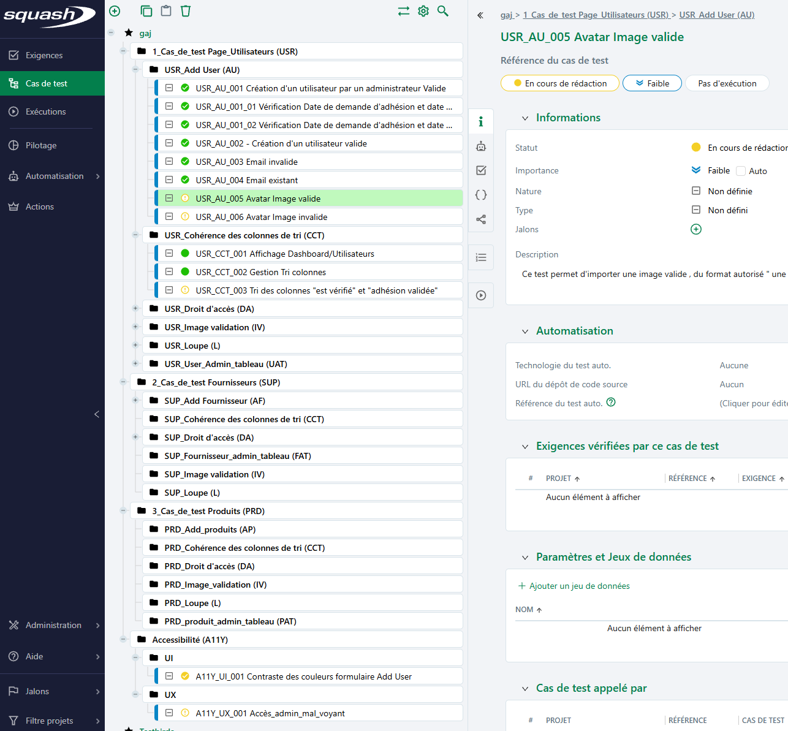
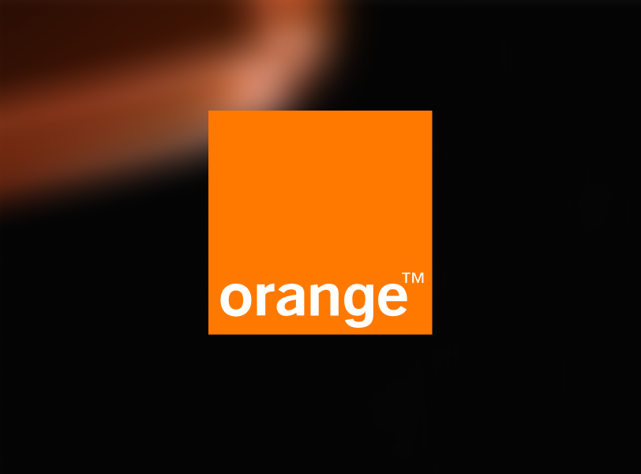

Testeuse logiciels / QA
Projets de test
Quelques exemples pour illustrer ma méthode

Groupement d’achat Janzé — Démarche de test
Bénévolat
Groupement d’achat Janzé — Démarche de test
BénévolatContexte : préparation et structuration d’une démarche de test sur un site “groupement d’achat” (organisation type Confluence).
Plan de test :
- objectifs, portée et stratégie de test
- planification, risques & contingences, approbations
Périmètre (exemples) :
- utilisateur & authentification
- commandes & paiement
- produit / catalogue
- sécurité
Objectifs de test :
- assurer la conformité aux exigences fonctionnelles et à la norme RGAA
- valider les fonctionnalités clés et identifier les défauts
- vérifier l’utilisation sur smartphone
Exclusions :
- tests de performance et de charge
- tests d’API
Stratégie de test (backend) :
- tests fonctionnels (boîte noire : partition d’équivalence, valeurs limites)
- tests exploratoires
- niveaux : tests système, tests d’accessibilité
- approche : combinaison de tests manuels et automatisés
- critères d’entrée/sortie (environnement prêt, critères de fin satisfaits)
Vu d'ensemble du composant burger

Conception & suivi :
- référentiel des risques (modèle + déclinaison projet)
- scénarios de test, jeux de données
- template de rapport d’anomalie, codification et suivi dans Squash
- rapport d’anomalies accessibilité (WCAG 2.2 / RGAA)
- compléments : schéma technique (draw.io – backend), espace GitHub, piste d’automatisation
Gestion des tests

Rapport d'anomalie
Analyse des risques
Ressource : https://groupement-achat-jans.fr/

Orange — Portail de pilotage sécurité (stage)
Stage QA
Voir plusRéduire

Orange — Portail de pilotage sécurité (stage)
Stage QAContexte : portail interne Orange visant à mieux piloter la sécurité des actifs exposés sur Internet (et en interne), à partir de résultats de scans de vulnérabilités.
Objectifs :
- mettre en pratique mes compétences en contexte professionnel et approfondir mes compétences techniques
- assurer la qualité du portail : tester le front-end, détecter les régressions, organiser les tests de confirmation
- collaborer avec l’UI/UX, les développeurs back-end, le Product Owner et mon tuteur (manager), via les daily meetings et échanges informels
- veiller à l’accessibilité numérique et appliquer la réglementation RGAA (106 critères) pour rendre le portail accessible
- mettre en place une structure de tests pérenne pour une démarche d’amélioration continue (fonctionnels, accessibilité, et une part d’automatisation)
Fonctionnalité principale :
- fournir aux acteurs sécurité un tableau de bord de la sécurité de leurs actifs
- exploiter des résultats issus de scanners de vulnérabilités du service interne
Suivi / indicateurs (exemples) :
- via Jira / Xray : taux de couverture, nombre de bugs identifiés, nombre de corrections, suivi qualité
Aperçus de mon travail :


Ressource :
Linux — Mise en pratique
Linux
Voir plusRéduire
Linux — Mise en pratique
LinuxContexte : mise en pratique des commandes Linux et de la connexion à distance, sur un Raspberry Pi 5.
Connexion à distance :
- connexion en SSH (connexion sécurisée d’un ordinateur à un autre)
- utilisation de PuTTY (Windows)
- récupération de l’adresse IP du Raspberry (infos Wi‑Fi / options avancées)
- côté PC : repérage de l’IP via ipconfig (Windows) / ifconfig (Linux)
- connexion avec les identifiants de la machine, puis navigation dans l’arborescence
Commandes & navigation :
- cd pour se déplacer (ex. `cd Documents/`)
- ls pour lister le contenu d’un répertoire
- recherche et exécution d’un script Python (ex. `python Temperature.py`)
Mini-automatisation (Python) :
- création d’un petit programme qui enregistre la température et l’heure à intervalles réguliers
- utilisation de `import time` et de la date/heure (ex. `datetime.now()`)
- boucle `while True` + `time.sleep(...)` (affichage toutes les 30 secondes)

ISTQBingBang
ISTQB
Voir plusRéduire
ISTQBingBang
ISTQB
Contexte : projet réalisé en trinôme (3 personnes) pour préparer l’ISTQB et apprendre à travailler en mode Agile.
Livrable principal : un jeu de cartes multijoueur sur le thème ISTQB.
But du jeu : être le joueur ayant le moins de bugs et le plus de cartes en répondant correctement aux questions.
Règles (résumé) :
- lancer un dé pour déterminer la catégorie de question
- piocher une carte dans le paquet correspondant
- si bonne réponse : la carte est gagnée
- si mauvaise réponse : une carte bug est récupérée
- à partir de 2 à 3 bugs : état “critique” (utilisation d’un joker)
- défi possible entre joueurs (non‑régression / débug / revue)
Catégories ISTQB utilisées :
- fondamentaux des tests
- tester tout au long du cycle de vie du développement logiciel
- test statique
- analyse et conception des tests
- gestion des activités de test
- outils de test
Apprentissages Agile (mise en pratique) :
- transformation d’un backlog en User Stories
- gestion de sprint, itérations et adaptation après une mauvaise interprétation du besoin
- Definition of Done (DoD) / Definition of Ready (DoR)
- burndown chart (suivi du reste à faire)
- feedback, rétrospective, test d’acceptation
Mes engagements
Quelques engagements et activités qui me tiennent à cœur
CER (Comité d'Éthique de Recherche) — Processus d’évaluation des dossiers
Engagement
Voir plusRéduire
CER (Comité d'Éthique de Recherche) — Processus d’évaluation des dossiers
Engagement
Notre mission :
- valider les projets (mémoires, publications, recherches) nécessitant un avis éthique, obligatoire pour toute étude impliquant des participants humains
- garantir une évaluation équilibrée : chaque dossier est examiné par un binôme professionnel/partie civile, combinant expertise médicale et regard expérientiel
- assurer le respect strict des règles éthiques et légales (RGPD, consentement éclairé, anonymisation des données, stockage sécurisé)
Fonctionnement :
- chaque dossier est évalué par deux rapporteurs selon les critères définis dans la grille de lecture IRB/CER (un troisième rapporteur peut être sollicité selon les besoins)
- les rapporteurs sont désignés par la présidente Dr Aurélie Bourmaud en fonction de leur champ de compétence et du sujet déposé
- délai de 15 jours pour rendre les évaluations
Décisions possibles :
- avis favorable
- sous réserve de modification
- avis défavorable
Communication :
- les remarques des rapporteurs sont transmises à l’autre rapporteur et à la présidente
- les avis compilés sont communiqués à l’investigateur
En cas de litige :
- un CER complet exceptionnel peut être convoqué par la présidente (réunion à distance)
Information des membres :
- tous les membres du CER sont informés des projets, des rapporteurs désignés et de l’avis final pour chaque projet
Réseau des Bénévoles LADAPT — Ille-et-Vilaine
Engagement
Voir plusRéduire
Réseau des Bénévoles LADAPT — Ille-et-Vilaine
Engagement
Présentation :
Le réseau des bénévoles de LADAPT soutient les personnes en situation de handicap et leurs familles depuis plus de 25 ans.
Créé en 2000, il compte 211 bénévoles engagés et dispose de 7 référents régionaux.
Ses actions visent la réussite professionnelle et sociale via parrainage, sensibilisation, activités culturelles et loisirs.
Sur 3 ans, le réseau a sensibilisé 13 595 enfants au handicap.
Actions en Ille-et-Vilaine :
- création d’un comité départemental en 2001, soutenu par la DREETS 35 pour 2025
- soutien à l’insertion professionnelle : parrainages, accompagnements personnalisés, entretiens-conseils
- participation à des événements : SEEPH, Forum emploi, Job Dating, Handicafé
Objectifs & fonctionnement :
- offrir un accompagnement complémentaire à l’insertion, basé sur l’expérience et la disponibilité bénévole
- favoriser la confiance, l’autonomie, le lien social, et la réinsertion dans l’entreprise
- instaurer une relation de proximité pour aider à résoudre les difficultés et briser l’isolement
- travailler en réseau pour optimiser le suivi, partager l’expérience et favoriser l’ouverture au monde professionnel
Les bénévoles & les parrainés :
- 28 bénévoles actifs, majoritairement retraités, hommes et femmes de divers horizons
- compétences : handicap, loi du 11 février 2005, acteurs institutionnels, techniques de recherche d’emploi
- parrainés : personnes en recherche d’emploi, en difficulté ou en perte de confiance (forums, partenaires, site national)
Grâce au réseau :
- j’ai pu me former aux Premiers Secours en Santé Mentale (PSSM), pour mieux accompagner et orienter les personnes en situation de fragilité
Témoignages — OncoBretagne & LADAPT
Témoignage
Voir plusRéduire
Témoignages — OncoBretagne & LADAPT
Témoignage
OncoBretagne — Journée régionale des Soins Oncologiques de Support
22 mars 2024 — Palais des Congrès, Lorient
OncoBretagne coordonne et améliore la prise en charge des personnes atteintes de cancer en Bretagne. Cette journée réunissait professionnels de santé, soignants et patients autour des soins oncologiques de support : accompagnement psychologique, sexologie, bien-être et qualité de vie.
Mon témoignage :
J'ai été invitée à partager mon vécu des soins de support, en particulier des ateliers sexologie, souvent méconnus ou sous-estimés. Ces ateliers m'ont appris à mieux communiquer, à lâcher prise, à mieux comprendre ma sphère intime et celle de mon conjoint. Ils ne traitent pas uniquement de sexualité au sens strict : ils aident à reconstruire le lien à soi et aux autres, dans une période où la maladie peut tout envahir.
J'ai pris la parole pour encourager les patients à ne pas avoir peur d'y aller et pour rappeler à tous l'importance de ces dispositifs, pour tous les âges et tous les genres.
LADAPT — Convention nationale Handicap & emploi 2026
Table ronde avec LADAPT, France Travail, Cap emploi (Cheops), l'Agefiph et le FIPHFP
Le DFA, c'est quoi ?
Le Dispositif de Financement d'Accompagnement est proposé par LADAPT dans le cadre du statut ESRP (Établissements et services de réadaptation professionnelle). Il permet à une personne en situation de handicap suivant une formation de bénéficier d'un accompagnement humain individualisé, en lien direct avec l'organisme de formation.
Concrètement, le DFA prend en charge :
- l'identification des besoins spécifiques liés au handicap
- la coordination avec l'école (référente handicap, formateurs)
- les aménagements de poste (ergonomie, matériel, rythme)
- le suivi psychologique et la gestion des RDV médicaux
- le soutien à la préparation des examens
Partager cette expérience lors de la table ronde, c'était l'occasion de mettre des mots concrets sur ce que le DFA apporte réellement et de montrer que l'inclusion professionnelle, ça se construit avec méthode et avec les bonnes personnes.
Contact
Pour échanger sur un poste, un projet ou une opportunité